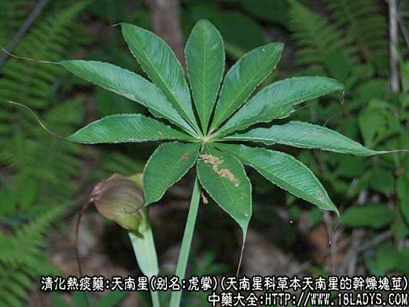
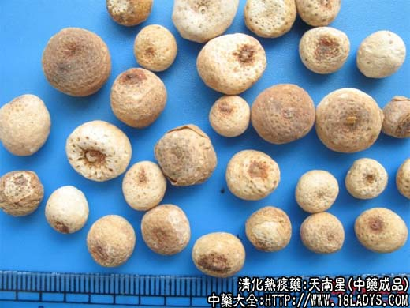
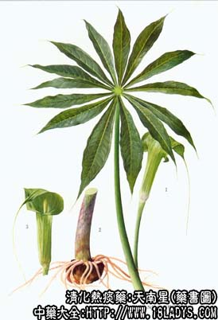

天南星为常用中药。《神农本草经》列为下品。原名虎掌。
别名：虎掌、南星。
来源：为天南星科多年生草本植物天南星，东北天南星，或异叶天南星，等同属多种天南星撞去外皮的干燥块茎。栽培或野生。
产地：主产于四川、河南、云南、河北等省。
性状鉴别：块茎呈半球形或扁球形。直径2～7厘米，高厚1～3厘米。顶面中央有凹陷的茎痕，周围有多数须根痕（俗称棕眼）。周围有突起的侧芽数枚，亦呈扁球形，全体虎掌状，故名“虎掌南星”。但也有不带侧芽者。表面乳白色，未去净外皮者淡棕色。质坚硬。断面白色，粉质。气微，味辣而麻舌。有毒不宜尝试。
以个大均匀、质坚、色白、粉性者为佳。
主要成分：含皂甙、安息香酸、氨基酸等，又含D-甘露醇。
功效与作用：祛风解痉，燥湿化痰，其原理为：
1、镇静镇痉。水煎剂具明显镇静作用，并能提高试验动物的电痉挛阈。
2、祛痰。动物实验有较好的祛痰作用。
3、抗肿瘤。鲜南星之提液能抑制Hela细胞生长的对小白鼠肿瘤有抑瘤效用。
炮制：制用，生用。制法附后。
性味：辛、苦、温。
归经：入肺、肝、脾经。
功能：燥湿化痰，镇惊祛风。
主治：中风痰壅，风痰眩晕，湿痰咳喘。惊痫，因破伤风引起的抽风痉挛等症。外敷消肿痛。
临床应用：为祛风痰、镇痉痫的常用药。
1、用于祛风痰，治风寒痰湿滞留经络，而致有眩晕、口眼歪斜、半身不遂，手足痉挛、牙关紧闭者（可见于中风、破伤风等证）。
对于中风（脑血管意外）引起的瘫痪，宜用制南星治疗（偶也用胆南星）。病初起者，三七、大蓟之类止血药，症状稳定后，主要治疗半身不遂，则需与蜈松、鸡血藤等通经活络的藤类药配伍。如病者有烦燥、应停用制南星，或改用胆南星。对于破伤风，用胆南星，配全蝎，蜈松等，加强镇痉熄风作用，或配防风、天麻等，方如玉真散。动物实验证实玉真散对中枢神经系统有抑制作用。
2、用于镇惊痫，除治破伤风外，胆南星还常用于小儿热病抽搐，取其有镇静作用，常配牛黄、珍珠末等，方如牛珠七厘散（见牛黄项下）。亦治癫痫，配全蝎、僵蚕等，方如定痫丸。
3、近年来试用于治疗肿瘤，作为辅助药，一般用生南星，取其有去痹、镇痛作用，功效有待进一步观察。最近有报道用鲜南星内服（15g起，渐增至45g，煎汤代茶）结合局部用药（栓剂）治疗子宫颈癌，临床疗效较好。
4、外用生南星敷治痫肿（阴疽较适宜）疼痛、跌打损伤。例如治类风湿性关节炎之肿痛，可用生南星、老姜、生菖蒲各适量，捣烂敷患处外；又治口角流涎用生南星末醋调敷足心涌泉穴处，效果也好。
使用注意：1、三种南星的比较。生南星毒性较大，内服慎用，一般只用于外敷，如确需用生南星内服时，也只能入煎剂，并配生姜同煎，充分煎透（这样也就等于对生南星进行了一定的炮制）服后觉有舌麻时，可用食糖解之。制南星毒性较小，散风寒、通经络的作用较好，宜于中风患者用。胆南星是经苦寒之牛胆汁制过，其燥烈之气已大减，性味转为苦凉，有化痰熄风之长，而无燥热伤阴之弊，宜于热痰惊痫者用。
2、与半夏比较。半夏辛散而专走肠胃，故止呕吐和去肠胃湿痰的作用较好；南星辛燥而专走经络，故散风寒和除经络间的风痰湿痰作用较好。遇中风、癫痫等，有风痰、吐逆、头晕、目眩者，可用以南星、半夏合用。
3、阴虚、燥咳者不宜用天南星，孕妇亦忌用。
用量：胆南星、制南星内服每次3～6g。生南星外用适量，内服治癌肿时药量可酌情加大，可用至3～15g，但有肝病者仍不宜用。
处方举例：玉真散（《医宗金鉴》）：胆南星、防风、白芷、羌活、白附子、天麻、各等份为末，每服3～6g。
定痫丸（《证治准绳》）：胆南星、蝎尾、乌梢蛇、姜半夏、白附子各7.5g，熊胆、白矾各3.75g，蜈松1条（去头足），研末为丸如梧桐子大，朱砂为衣，每服2～3丸。
炮制方法：将天南星大小分开倒入容器中，用清水浸泡，每日换水2次。浸至无生心为度。再取鲜姜洗净捣烂，白矾轧碎。与浸透的南星一并放置于容器中，加水清水将南星淹没。浸1～2周后，去掉姜渣矾水。另换清水浸漂5～7天，每日换水2～3次。然后放锅内加清水煮6～8小时，至内无生心，尝无麻辣感为度。捞出阴晾至6成干后，再置容器中圈润至内外软硬适宜，切片晒干即成。（每50kg南星用鲜姜6.25kg、白矾6.25kg）。